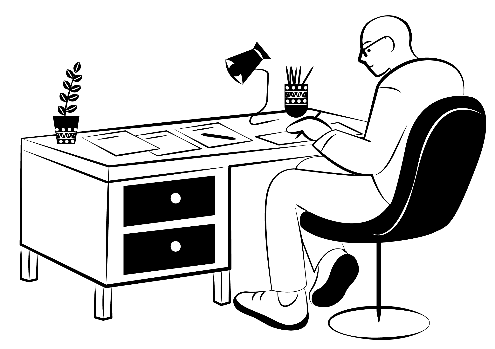

Ciao, mi chiamo Gianluca Gattuso.
Sono un Web Designer freelance. Piacere di conoscerti!


Ciao, mi chiamo Gianluca Gattuso.
Sono un Web Designer freelance. Piacere di conoscerti!
Ciao! Mi chiamo Gianluca Gattuso e sono un Web Designer autodidatta. La passione per internet Ciao! Mi chiamo Gianluca Gattuso e sono un Web Designer autodidatta. La passione per internetCiao! Mi chiamo Gianluca Gattuso e sono un Web Designer autodidatta. La passione per internetCiao! Mi chiamo Gianluca Gattuso e sono un Web Designer autodidatta. La passione per internetCiao! Mi chiamo Gianluca Gattuso e sono un Web Designer autodidatta. La passione per internetCiao! Mi chiamo Gianluca Gattuso e sono un Web Designer autodidatta. La passione per internetCiao! Mi chiamo Gianluca Gattuso e sono un Web Designer autodidatta. La passione per internet
Cose a cui sono appassionato.


Progetti
Ghost Story
Il sito dei miei progetti artistici e musicali. Scritto in HTML, CSS e Javascript, per gestire l'apparizione delle animazioni nella pagina.
.png)